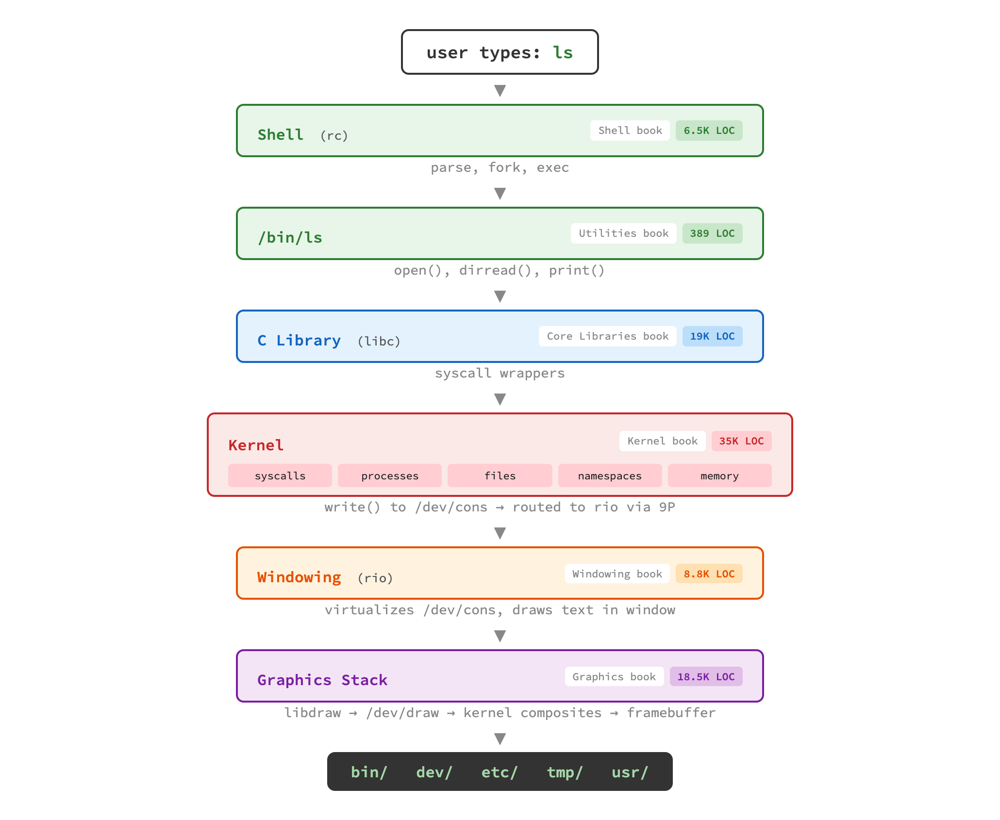
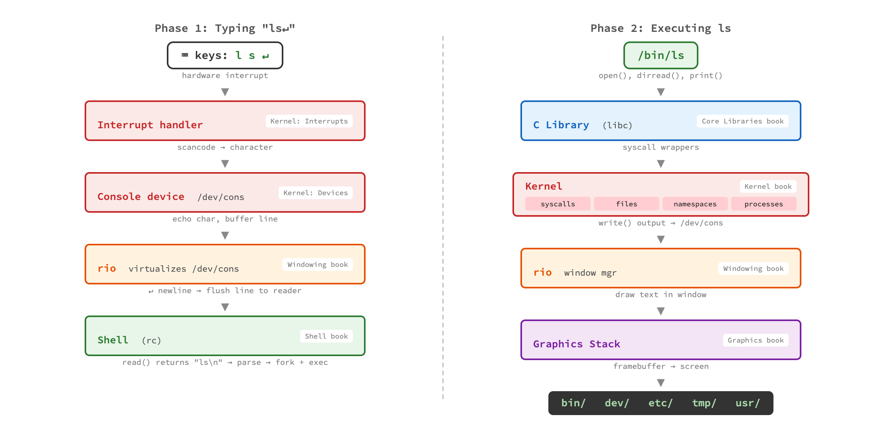
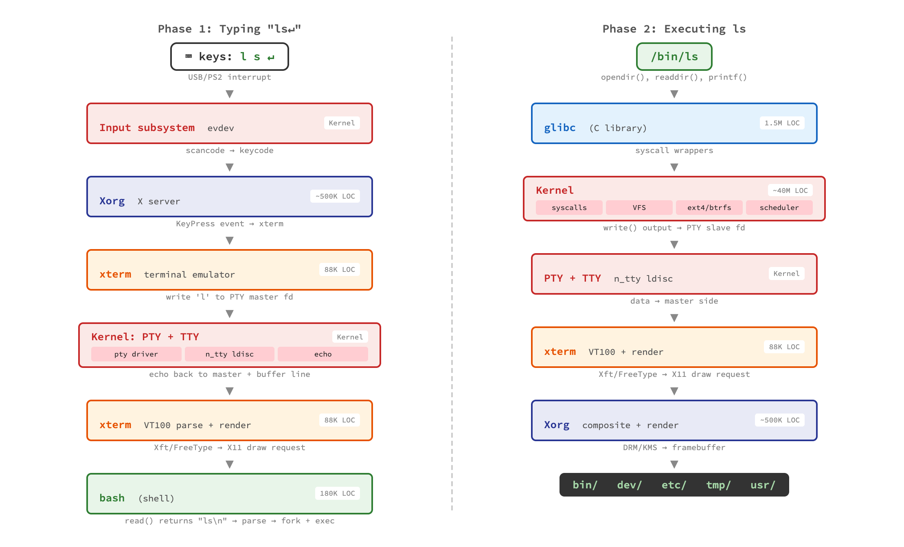
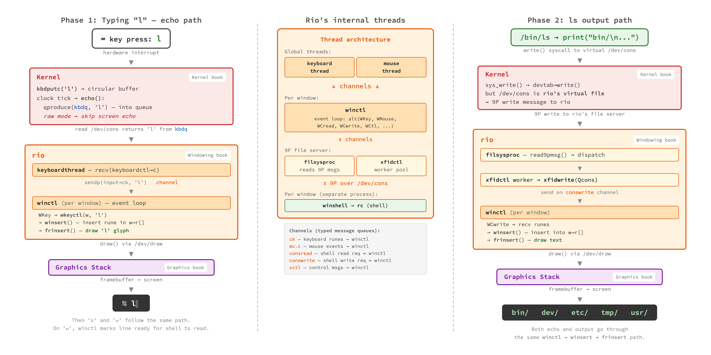
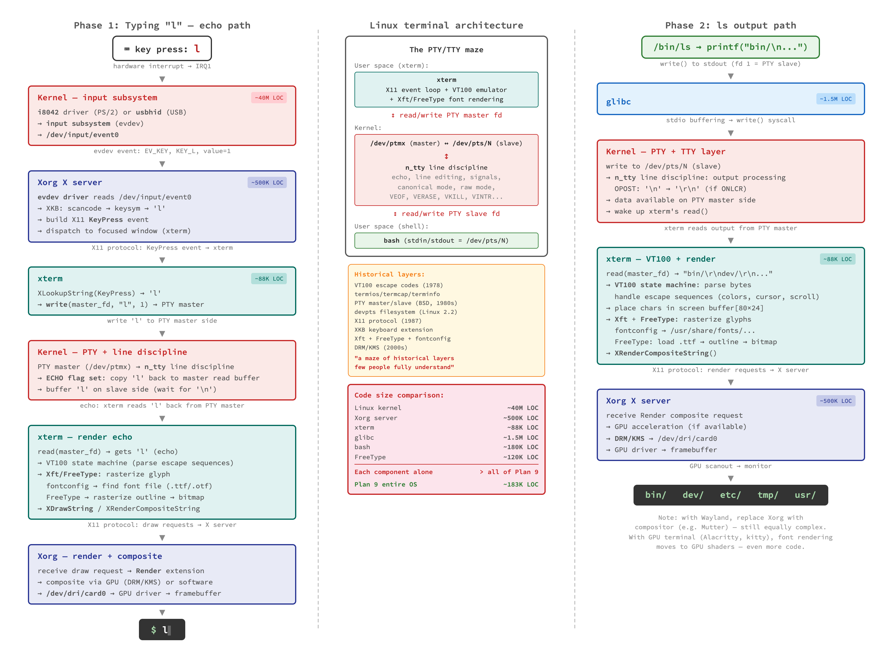
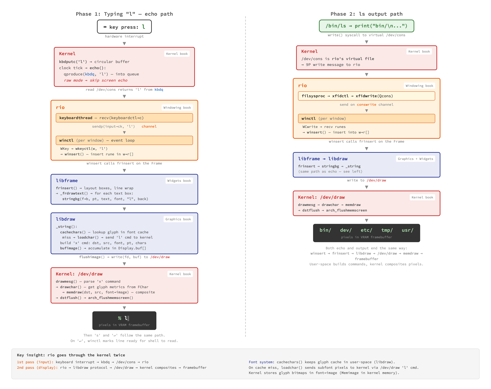

ls
What happens when you type ls and press Enter?
This simple command travels through almost every layer of the
operating system, touching code described in 7 different books
of the Principia Softwarica series.
In Plan 9, the path is remarkably clean.
The shell parses and executes the command,
ls calls open() and dirread()
through libc, the kernel handles the system calls and file operations,
then the output flows back up through the kernel to rio (the windowing
system), which draws the text using the graphics stack.

Each colored box corresponds to a book in the series.
The labels on the right show which book covers that layer,
and the LOC badges show how small each component is.
Notice how the output of ls goes through the kernel
twice: once for the write() system call, and
again when rio talks to the graphics device via /dev/draw.
The journey actually has two distinct phases.
Phase 1 is what happens before you press Enter:
each keystroke travels from the keyboard through an interrupt handler,
through the console device, to rio which virtualizes /dev/cons,
and finally to the shell which reads the line.
Phase 2 is the execution: the shell forks, ls runs,
output flows back through the kernel to rio and the graphics stack.

The same two phases on Linux involve significantly more layers and more code. The input subsystem, the X server, the terminal emulator (xterm), the PTY/TTY subsystem — each adds complexity that Plan 9 avoids through its unified design. The LOC annotations show why it is impractical to explain a full Linux system in a book series: each component is individually larger than the entire Plan 9 system combined.

Zooming in further reveals how rio orchestrates the flow internally. Rio is a concurrent program with multiple threads communicating through channels (Plan 9's equivalent of Go channels — in fact, Go channels were inspired by this very code). The keyboard thread receives input, the shell thread manages the read/write protocol with the shell process, and the window thread handles display updates.

At this level of detail, the Linux path becomes considerably more
involved. The PTY layer alone (pty driver, n_tty line discipline,
echo handling) replaces what Plan 9 does elegantly with rio's
virtual /dev/cons.
The X server, xterm's VT100 parser, FreeType font rendering,
and the Xorg compositor each add substantial layers.

At the function level, we can trace the exact call chain.
On the input side: kbdrepeat() in the kernel feeds
characters through recv() on a channel to rio's
keyboardthread, which calls sendcomplete()
to deliver the character to the window.
On the output side: rio calls Frsinsert() from
libframe to lay out text, then stringbg() from
libdraw, which writes to /dev/draw where the kernel
composites pixels to the framebuffer.

A key insight at this level: rio goes through the kernel twice.
On the input path: keyboard interrupt → /dev/kbdraw → rio.
On the output path: rio → libframe protocol → /dev/draw → kernel composites → framebuffer.
The font system (cachechars()) keeps glyph caches in user-space (libdraw).
On cache miss, loadchar() sends subfonts to the kernel via /dev/draw too.
Finally, here is the complete picture with actual source code snippets, data structures, and file paths. This is the level of detail you reach after reading through the Principia books. Every layer is traced to specific functions, every data flow annotated with the relevant code.
Scroll to zoom, drag to pan. Or open full size.
{kind=link}